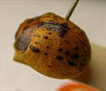
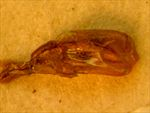
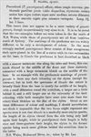

Click on images to enlarge
.jpg){kind=link}

Paropsis blanda type specimen, lateral view
.jpg)
Paropsis blanda type specimen, anterior view
.jpg){kind=link}

Paropsis blanda type specimen, aedeagus
.jpg)
Paropsis blanda type specimen, labels
{kind=link}

Paropsis blanda, description
Name
Trachymela blanda (Blackburn, 1897)
Type specimen
Location: BMNH
Label data: “Type” (red-bordered circle), “6240 Tamw. T”, “Blackburn coll. 1910-236”, “Paropsis blanda Blackb.”, aedeagus has been glued to a separate card.
Male; 8.4 mm (=3 3/4 lin, from description). Blackburn gives "N.S. Wales; Richmond River, &c." as the type locality, but the type is labelled Tamw., which possibly refers to Tamworth.
Notes
T. blanda is very close to Ta02 in appearance, though with more black colouring on the pronotum and elytra. Blackburn’s description of T. punctipennis and his characterization of the differences between it and blanda relies heavily on colour and best fits the southern specimens (Victoria, Canberra, etc), with blanda a better fit for the northern variety. This may, therefore, be a rather pale specimen of Ta02.
References
Blackburn, T. 1897, "Revision of the genus Paropsis. Part II", Proceedings of the Linnean Society of New South Wales, vol. 22, 166-189 (page 170).
Copyright © 2026. All rights reserved.